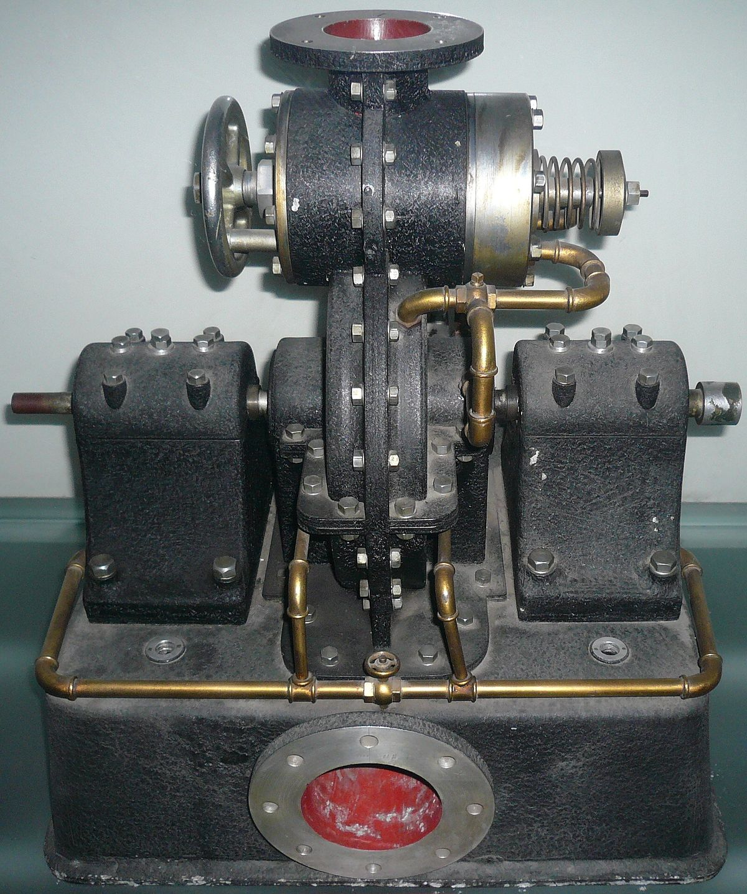

Tesla's fascination with electricity and its potential for the betterment of humanity led him to work tirelessly on various projects. One of his most ambitious ideas was to provide free and wireless energy to the entire world. He envisioned a global network of Wardenclyffe Towers, capable of transmitting electricity wirelessly over vast distances. Unfortunately, due to financial constraints and skepticism from investors, the project never reached its full potential, and the Wardenclyffe Tower was ultimately abandoned. Nonetheless, Tesla's vision for wireless power transmission laid the groundwork for future technological advancements in wireless communication and energy transmission.
Despite facing challenges and often being underappreciated during his lifetime, Nikola Tesla's legacy endures. His innovative ideas and inventions continue to shape the modern world, and his visionary concepts have inspired countless inventors and scientists. Tesla's impact on electrical engineering, physics, and technology remains profound, and his contributions to humanity's progress are immeasurable.
Nikola Tesla's brilliance and his relentless pursuit of knowledge have left an indelible mark on history. As we remember this brilliant mind and his incredible achievements, let us celebrate the life and work of the man known as the "Vrăjitorul Electric" or "Magicianul Electric." His story serves as a reminder that determination, curiosity, and imagination can lead to revolutionary breakthroughs that shape the course of civilization. Nikola Tesla's light continues to shine brightly, illuminating the path for future generations to come.
You can find more informations about Nikola Tesla here.
Inventions
Tesla Coil Invention

Tesla Turbine InventionTesla Induction Motor InventionTesla Magnifying Transmitter InventionTesla Neon Lamp InventionTesla Valve InventionTesla Electromagnetic Induction InventionTesla Oscilattor Invention
Timeline
1856: Nikola Tesla is born on July 10 in Smiljan, Croatia, which was then part of the Austrian Empire.
1884: Tesla arrives in the United States and begins working for Thomas Edison's company, the Edison Machine Works.
1887: Tesla develops the principles of the rotating magnetic field, a crucial innovation for alternating current (AC) electrical systems.
1891: He invents the "Tesla coil," a high-frequency transformer that becomes a key component in wireless transmission experiments.
1893: Tesla demonstrates the wireless transmission of energy and illuminates phosphorescent lamps from a distance without using wires, a groundbreaking achievement.
1895: Tesla's famous Wardenclyffe Tower project begins, intended to demonstrate wireless communication and provide free electricity to the world. However, funding issues lead to its eventual abandonment.
1897: Tesla files a patent for the "Tesla valve," an early version of a fluid diode, used in mechanical and electrical systems.
1900: He performs experiments related to wireless power transmission and receives a patent for the "Art of Transmitting Electrical Energy Through the Natural Mediums."
1917: Tesla's laboratory in Wardenclyffe is demolished, marking the end of an era for his ambitious projects.
1943: Nikola Tesla passes away on January 7 in New York City, leaving behind a legacy of innovation and visionary ideas.